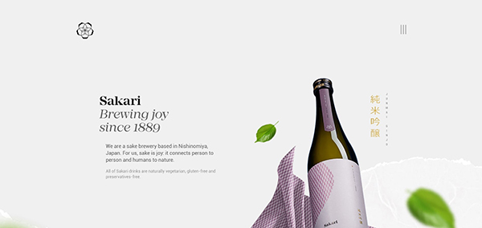
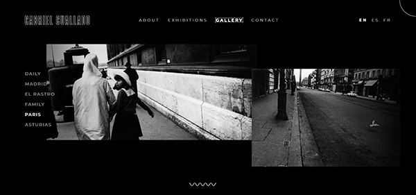

Project Summary
For the final project, I want to overhaul my previous design for the Every Picture studio, focusing more on image-based storytelling and incorporating parallax scrolling.
Comparison Project: Sakari Sake
This website is one long vertical strip that the user can scroll through to explore multiple sections of information.
What I enjoy about this site is the subtle animations that appear as the user scrolls, either with text and images sliding in, or the blurred leaves in the background slightly bouncing. While the site itself uses a grayscale theme for its background and text, the images provide a myriad of colors, adding a note of simplicity and elegance to the page. There’s also a logo (button) and menu icon to bring the user to different sections of the page via smooth scrolling, which adds to the overall experience of a smooth “drink”.
Comparison Project: Gabriel Cuallado
This second website is a digital photography portfolio, showcasing the photographer’s significant collections in the form of a horizontal slideshow.
The images shift left and right upon scrolling until the collection’s beginning or end, emulating a photo reel. What I find really cool here is the parallax movement that the images have as they appear and move away from the screen, as well as an integrated progress bar on the bottom for each photo collection. The only gripe I have is that the parallax movement feels rather clunky, similar to input lag, which is in contrast to the really crisp and responsive hover animations for the rest of the page.
Project Goals
The main feature that I want to be able to implement is parallax motion, an animated interaction based on scrolling, loosely similar to what the previously mentioned websites incorporate. I also want to try having minimal text on the page, focusing more on the images and interactions for storytelling. I want to implement a vertical scroll pattern as is present in the first example, along with subtle animations to emulate movement. In addition to that, I want my images to be able to tell a story, so grouping them together like in the second example might be how this is implemented. In essence, I want to create a storytelling experience like the second example in the style of the first example.
Design Strategies
For this project, I want to go for a nostalgic, warm feeling that comes with examining old photos. However, I don’t want to end up creating a simple photo gallery, so I plan on grouping images together based on the timeframe or category of people involved. Since I want to emphasize the images and stories connected to them, I’ll probably opt for an offwhite (or very light) background to steer the user’s attention towards the content. In addition, I plan on having minimal to no type on the page, except for maybe headers and dates. The images themselves will be edited to look like polaroids, to emulate the feeling of snapshots from my life. Combined with the use of proximity and grouping, I should be able to create “clusters” of images to signify separate sections.
Interaction Strategies
Since I want to implement parallax motion, I’ll need to have several custom classes just to handle the speed at which images can move upon scrolling (using translateZ). I might also take inspiration from the first website and have a clickable menu icon that pulls up an overlay which will act as a navigation to sections of the page with smooth scrolling. To have a sense of movement on the page, I’ll add time-based animations to blurred background polaroids so that they slightly bounce around. So that the user can explore the images in detail, I’ll also add an overlay with a larger version of the image once the user clicks on any of the showcased photos.
Experience Goals
Ideally, I want the user to be able to view the website as a chain of memories, and be able to interpret (groups of) images as significant parts of my life. In addition, I want the photos to provoke thought and emotion as the audience tries to figure out details - either who the people in the photo are, what’s happening, and so on. To do so, I’m planning on omitting the text summaries and stories that I included in the previous iteration to allow the user’s imagination to flow freely. As I want the photos to feel connected, I’ll also create a background image with a rope and manually place images around this background to create a sense of flow.